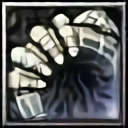
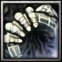
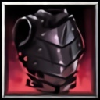

Assassin
Agility ✧ Short Burst Melee DPS
Introduction
"Both sides of war tend to avoid fighting in the night because 'she' wanders around.." - A Survivor of Empire War
Assassin is a damage dealer class that is focused on casting skills from melee to mid range. She is excellent at dealing both AoE and single target damage. With her, you don’t have to worry about getting aggroed since she has a unique skill called Dark Shroud, which allows her to be invisible all the time. Her playstyle involves short combo rotations.
Abilities
[D] Dark Shroud
[Passive]
Ability to meld into darkness and assassinate effortlessly. ∴ Allows all skills to critically strike ∴ Enters stealth if out of combat for 2.5 seconds ∴ While stealthed, movement speed is increased by 75 and damage taken is reduced by 30%
[Toggle]
∴ TOGGLE OFF: Enable invisibility ∴ TOGGLE ON: Disable invisibility
[Q] Shadow Slash

[Active]
Slashes enemey's weak point. ∴ Attack damage X 0.4 + AGI X 4 magic damage ∴ If hit, obtains Shadow Mark for 5 seconds, increasing critical chance by 6% (stacks up to 5 times) ∴ Upon reaching max stacks, duration no longer refreshes but cooldown of Ambush is reset
Cooldown: 3 seconds
[W] Ambush

[E] Shadow Walk

[R] Smoke Bomb

[T] Shadow Rush

[Active]
Summons shadows from all directions and rush toward the target point. ∴ AGI X 20 magic damage ∴ Summons 5 additional shadows that copy next Shadow Slash or Ambush, each dealing 50% of original damage ∴ When max stacks of Shadow Mark is obtained, can be activated immediately regardless of cooldown
Cooldown: 15 seconds

When this skill hits an enemy, it gives you a stack that increases your critical chance for 5 seconds, stackable up to 5 stacks.
Each stack will be shown as your mana, when max stacks have been reached it will reset back to 0 after 5 seconds.
Can be combined with [T] to instantly deal 6 [Q]s at the same time.
Your [W] also resets upon reaching max stacks.
After casting this skill, you get a buff that increases your total attack damage for 3 seconds.
You can see if the buff is active or not by looking at your status bar.
Your [Q] also resets after using this skill.
Since most of your skill scales with attack damage, make sure the buff is active on burst!
Can be combined with [T] to deal massive damage.
This is another damage dealing skill, usually used after [W].
Since [W] increases your attack damage and teleports you behind the target.
The damage difference here is huge, make sure to correctly use [E].
It also gives you temporary movement speed bonus, use it to leave dangerous situations!
Equipments
Minor to Coin Gear Progression
 

Tepethia, the Crimson Sword of Requiem
[Epic]
Deltirama Grade Weapon (Melee)
Resignation is what kills people. Once they've rejected resignation, humans gain the privilege of making humanity their footpath.
Stats
- ∴ +4000 Damage
- ∴ +410 AGI
- ∴ +750 HP
- ∴ +0.2x Crit Multiplier
Passive
- ⁘ Activates Blood Release on every 14th attack
- ⁘ Heals user for (250 + MAIN STAT X 0.6) HP and activating a random Wrath effect
- ⁘ Red Wrath: deals (MAIN STAT X 4.25) magic splash damage
- ⁘ Green Wrath: reduces enemy movement and ATK SPD by 66% for 3 seconds, deals (MAIN STAT X 2.25) magic damage in an AoE, and stuns non-boss units for 0.25 seconds
A good starting weapon to build, gives you decent Attack Damage, Agility, HP for survival, and also Crit Multiplier.
The passive is nice for early game, since you don't have any healing abilities.
This is the main weapon path of assassin that you will upgrade until the end game.
Vest of Cyclone
[Epic]
Neptinos Grade Armor
Vest that bestows you with the speed of a cyclone.
Stats
- ∴ +175 Armor
- ∴ +270 AGI
- ∴ +5% Skill Damage
- ∴ +5% Magic Defense
Passive
- ⁘ On skill cast, activates Wind Fury for 1.5 seconds
- ⁘ Next 2 attacks hit once to deal bonus (50% ATK DMG) physical damage
- ⁘ Increases movement speed by 300 (past limit)
Best early armor to build.
When you cast a skill, it will give you temporary movement bonus, very useful to close in, or get out of fight.
The passive also allows your next two attacks to hit twice and deal bonus 50% of your ATK DMG as physical damage.
Slayer Boots
[Epic]
Neptinos Grade Wings
Boots composed of demon hides that grants excellent mobility
Stats
- ∴ +1350 Damage
- ∴ +105 STR
- ∴ +150 AGI
- ∴ +0.1x Crit Multiplier
- ∴ +4% Skill Damage
Easily the best wings to get in the early game. It's easy to get too since it's a drop from Demon Lord Beriel boss and not a craft.
Gives you decent Attack Damage, Agility, Crit Multiplier, and Skill Damage.
You can also just use this wings until you upgrade it to Storm and skip Gnosis grade wings.
Ring of the Reaper
[Epic]
Neptinos Grade Accessory
One who controls death, may obtain infinite powers
Stats
- ∴ +260 AGI
- ∴ +295 INT
- ∴ +60 HP regen
- ∴ +30 MP regen
- ∴ +20% Attack Speed
- ∴ +10% Skill Damage
Active
- ❖ On use, converts damage taken into HP for 2 seconds
Even though there are better rings for early game, you should just make this ring because the upgrades are superior to all rings within the same tier.
The active is nice to keep yourself alive in an emergency situation.
Grim Visage
[Epic]
Neptinos Grade Headwear
The face of death itself.
Stats
- ∴ +90 Armor
- ∴ +145 AGI
- ∴ +750 HP
- ∴ +6% Skill Damage
- ∴ +6% Crit Chance
Active
- ❖ On use, activates Grim Vengeance for 8 seconds
- ❖ if HP is above 40%, increases MAIN STAT by 135
- ❖ If HP is below 40%, deals (MAIN STAT X 12.5) magic damage, increases MAIN STAT by 180, heals 70% max HP, and stuns nearby enemies for 1.5 seconds
- ❖ Regardless of HP percentage, increases critical damage by 0.20
- ❖ Cooldown: 60 seconds
This helm gives you decent Agility, HP for survivability, Skill Damage, and Critical Chance for the early game.
And the active is good too, increases your Agility and heals when your HP is below 40%.
Make sure use the active before burst to deal more damage.
Up to Shadow Dragon Gear Progression

Crimson Reaper
[Epic]
Gnosis Grade Weapon (Melee)
My sword thirsts for your blood !
Stats
- ∴ +6900 Damage
- ∴ +685 AGI
- ∴ +1800 HP
- ∴ +0.25x Crit Multiplier
Passive
- ⁘ Every 14th attack activates Wrath of Blood
- ⁘ Deals (MAIN STAT X 6) magic damage in an AoE
- ⁘ Heals user for (300 + (MAIN STAT X 0.6)) HP
- ⁘ On skill cast, 30% chance to activate Blood Awakening
- ⁘ Increases AGI by 240, ATK SPD by 30% and empowers Wrath of Blood for 7.5 seconds
- ⁘ Every 5th empowered attack, deals (1.25 X MAIN STAT X 6) magic damage in an AoE
- ⁘ Heals user for (450 + (MAIN STAT X 0.9)) HP
- ⁘ Heals nearby allies (225 + (MAIN STAT X 0.45)) HP
- ⁘ Stuns target for 0.375 seconds
- ⁘ Blood Awakening cooldown: 15 seconds
The upgrade of your previous weapon, now it gives even more stats.
The passive has changed, when you cast a skill, there's a 30% chance to activate it.
On proc, it increases your Agility, and Attack Speed.
Also every 5th of your attack it will AoE damage to enemies and ministuns them while also healing you and your allies.
It syncs well with yout [T] since it has 15 seconds cooldown after activation.
Make sure to activate it before burst!
Grandine, the Plates of Wraith
[Epic]
Gnosis Grade Armor
The cost shall be your soul ..
Stats
- ∴ +205 Armor
- ∴ +145 STR
- ∴ +325 AGI
- ∴ +10% Skill Damage
- ∴ +10% Crit Chance
Passive
- ⁘ When HP drops below 20%, activates Grandine
- ⁘ Increases damage reduction by 90% for 3 seconds
- ⁘ Instantly heals (35% max HP)
- ⁘ Heals 6% max HP per second for 3 seconds
- ⁘ Cooldown: 60 seconds
Specialty - Wraith Possession
※ Martial Artist - Nameless Arts reduces damage taken by 20% while active and grants immunity to instant death spells.
Critical chance is essential for assassin, and there's no other armor in the game that gives crit chance bonus in the mid game.
That's why Grandine would be the best armor for assassin to wear in mid game phase.
The passive gives you defensive utility that will save you a lot in the game!
Wings of Slayer
[Epic]
Gnosis Grade Wings
Unconstrained emotions can only bring calamity..
Stats
- ∴ +250 STR
- ∴ +235 AGI
- ∴ +6% Skill Damage
Passive
- ⁘ On skill cast, empowers next attack with Decimation
- ⁘ Deals ((MAIN STAT X 1.5) + AGI) pure damage
- ⁘ Can crit based on user's critical chance
- ⁘ Increases AGI by 27 for 6 seconds (up to 10 stacks)
- ⁘ At max stacks, duration cannot be extended but increases skill damage by 10%
You can make this wing if you want, since there are no better alternatives in the mid game.
Or you can just skip it and keep using Slayer Boots until late game and craft Storm.
The way to use this wing is to hit after you cast a skill, it gives you extra agility per proc.
At max stacks, it will increase your skill damage by 10%.
Cold Ring of Death
[Epic]
Gnosis Grade Accessory
A ring found on the corpse of a man who met a cold lone death.
Stats
- ∴ +430 Main Stat
- ∴ +60 HP regen
- ∴ +30 MP regen
- ∴ +20% Attack Speed
- ∴ +14.5% Skill Damage
Active
- ❖ On use, activate Darkness Ray
- ❖ Blocks all damage for 3 seconds and reflects it around user
- ❖ Deals (DMG TAKEN before reductions X 5) pure damage (up to (max HP X 5))
- ❖ Cooldown: 75 seconds
Best mid game ring for assassin, it gives a lot of main stat, huge skill damage, and a nice addition of HP regen.
The active allows you to blocks all damage taken for 3 seconds, and then reflects it back to nearby enemies.
Eye of Wallachia
[Epic]
Gnosis Grade Headwear
I can see your death ..
Stats
- ∴ +105 Armor
- ∴ +185 AGI
- ∴ +900 HP
- ∴ +7.5% Skill Damage
- ∴ +7.5% Crit Chance
Passive
- ⁘ 25% chance to activate Eye of Death on attack
- ⁘ Increases crit multiplier by 0.20, ATK DMG by 15%, and AGI by 225 for 6 seconds
- ⁘ Cooldown: 15 seconds
Another crit chance increase, which will be always good for assassin.
Other than that, it gives decent Agility, Skill Damage, and additional HP so you won't become a paper.
The passive is great for assassin, it gives everything that assassin need to deal more damage.
Make sure you proc the passive before burst, it increases your damage by a lot.
Up to Agareth Gear Progression
Cosmic Reaper
[Epic]
Alteia Grade Weapon (Melee)
Dagger infused with cosmic power
Stats
- ∴ +8250 Damage
- ∴ +780 AGI
- ∴ +2250 HP
- ∴ +0.4x Crit Multiplier
Passive
- ⁘ On every 12th attack, activates Dimension Cut
- ⁘ Deals (MAIN STAT X 7.5) magic damage in an AoE
- ⁘ On skill cast, activates Transcendence
- ⁘ Increases AGI by 300 and HP regen by (7.5% max HP) for 7.5 seconds
- ⁘ While awakened, Dimension Cut activates every 4th attack
- ⁘ Skill cast Cooldown: 15 seconds
Increased Attack Damage, Agility, HP, Crit Multiplier, everything!
The only thing that's different here is now the passive no longer gives you heal every 14th hit, instead it regens your HP by 7.5% every second for 7.5 seconds.
Athanasia, the Armor of the Reaper
[Epic]
Alteia Grade Armor
Did you think you could kill death itself?
Stats
- ∴ +200 Armor
- ∴ +180 STR
- ∴ +390 AGI
- ∴ +12% Skill Damage
- ∴ +12% Crit Chance
Passive
- ⁘ If HP drops below 20%, summons Reaper
- ⁘ Prevents HP from dropping below 1 for 6 seconds
- ⁘ Afterwards deals (50 + (AGI X 75)) pure damage in an AoE
- ⁘ Deals up to 125% more damage based on target's missing HP
- ⁘ Heals to full
- ⁘ Cooldown: 60 seconds
Specialty - Wraith Possession
※ Martial Artist - Nameless Arts reduces damage taken by 20% while active and grants immunity to instant death spells.
Nevedium, the Armor of Demonblood
[Epic]
Alteia Grade Armor
Armor drenched in demon's blood
Stats
- ∴ +210 Armor
- ∴ +345 AGI
- ∴ +12% Skill Damage
Passive
- ⁘ On dealing damage, accumulates Blood
- ⁘ Converts 1% of damage dealt into max HP (up to (AGI X 2) HP)
- ⁘ At max stacks, increases HP regen by 2%
Active
- ❖ On use, activates Demon Break
- ❖ Releases stored HP
- ❖ Deals (stored HP X 30) pure damage in an AoE
- ❖ Stuns for 1.5 seconds
- ❖ Increases AGI by 20% and damage output by 5% for 12 seconds
- ❖ Cooldown: 90 seconds
Here, you have two choices.
If you want to play it safely, use Athanasia.
Or if you want to deal much much more damage, you should go for Nevedium instead.
Nevedium increases your total agility by 20% and damage output by 5% when activated, so make sure you use it before doing your burst.
Storm
[Epic]
Alteia Grade Wings
Rave, and do not stop ! One mistake can cost your life.
Stats
- ∴ +1200 Damage
- ∴ +135 Main Stat
- ∴ +150 All Stats
- ∴ +0.2x Crit Multiplier
Passive
- ⁘ On skill cast, increases critical chance by 6% for 6 seconds (stacks up to 3 times)
Frustrated by your skills not hitting critical strike?
Well now, this wing is the solution to all of your past problems.
It gives everything assassin needs, from high Attack Damage, high Stats, Crit Multiplier, and also your critical chance!
Every skill cast will increase your critical chance by 6% per stack for a maximum of 3 stacks, a total of 18% critical chance bonus from a single item.
Ring of Frozen Soul
[Epic]
Alteia Grade Accessory
Ring imbued with dreadful ancient spirits
Stats
- ∴ +555 Main Stat
- ∴ +30% Attack Speed
- ∴ +17.5% Skill Damage
- ∴ +90 HP regen
- ∴ +45 MP regen
Active
❖ On use, activates Frozen Aegis
❖ Gives immunity to damage and debuffs for 3 seconds
❖ Upon expiration, deals (damage received X 10) pure damage in an AoE (up to (max HP X 10))
❖ Cooldown: 60 seconds
Eye of the Reaper
[Epic]
Alteia Grade Headwear
Death stares into you..
Stats
- ∴ +115 Armor
- ∴ +285 AGI
- ∴ +1500 HP
- ∴ +10% Skill Damage
- ∴ +10% Crit Chance
Passive
- ⁘ On attack, activates Eye of the Reaper
- ⁘ Increases ATK DMG by 17.5%, critical damage by 0.25 and AGI by 300 for 7.5 seconds
- ⁘ Cooldown: 15 seconds
Up to Styrix Gear Progression
Duskblade
[Epic]
Arcana Grade Weapon (Melee)
Dagger that puts end to all living things.
Stats
- ∴ +10500 Damage
- ∴ +1100 AGI
- ∴ +0.6x Crit Multiplier
- ∴ +8% Skill Damage
Passive
- ⁘ On basic attack, activates Twilight
- ⁘ Deals (90000 + AGI X 30) magic damage to target and takes 10% bonus skill damage for 4 seconds
- ⁘ Cooldown: 12 seconds, reduced by 1 second on each skill crit
Divine Slayer
[Epic]
Arcana Grade Weapon (Melee)
A sword that has power to cut down divine beings.
Stats
- ∴ +9400 Damage
- ∴ +880 AGI
- ∴ +2500 HP
- ∴ +0.5x Crit Multiplier
Passive
- ⁘ Every 12th attack activates Divine Slayer
- ⁘ Deals (4500 + MAIN STAT X 7.5) magic damage in an AoE
- ⁘ Deals 20% bonus damage to enemies below 50% HP
- ⁘ On skill cast, activates Transcendence
- ⁘ Increases AGI by 450 and HP regen by (Max HP X 7.5%) for 7.5 seconds
- ⁘ Divine Cut activates every 4th attack
- ⁘ Cooldown: 15 seconds
Keep using Cosmic Reaper until you reach Divine Slayer, and then its upgrade, Duskblade.
The way to use Duskblade, you just need to hit and it will deal damage while also boosting your skill damage for 4 seconds.
This item has a unique cooldown mechanic.
Every time your skill crit, it reduces its cooldown by 1 sec. Since assassin's skills are able to crit, it is very suitable for her.
Astral Fury
[Epic]
Arcana Grade Armor
Armor blessed with astral power
Stats
- ∴ +215 Armor
- ∴ +540 AGI
- ∴ +15% Skill Damage
- ∴ +12% Magic Defense
Passive
- ⁘ On skill cast, activates Astral Fury
- ⁘ Increases AGI by 150 and movement speed for 1.5 seconds
- ⁘ Next 2 attacks strikes 2 additional times for 50% physical damage
- ⁘ On 3rd consecutive proc, increases damage dealt by skills by 5% for 4 seconds and next 3 attacks calls down comets, each dealing 12500 magic damage (can critically strike)
- ⁘ Proc cooldown: 0.5 seconds
Exitium, the Armor of Ruin
[Epic]
Arcana Grade Armor
Doomsday, is it the destruction of the world, or its restoration?
Stats
- ∴ +230 Armor
- ∴ +190 STR
- ∴ +440 AGI
- ∴ +14% Skill Damage
- ∴ +14% Crit Chance
Passive
- ⁘ On attack, applies Mark of Ruin
- ⁘ Increases your damage dealt to target up to 8% based on target's missing HP for 4 seconds
- ⁘ If HP drops below 20%, summons Reaper
- ⁘ Prevents HP from dropping below 1 for 6 seconds
- ⁘ Afterwards, heals you to full and deals (AGI X 50 ~ 125) pure damage to nearby enemies based on their missing HP
- ⁘ Cooldown 60 seconds
Specialties - Bringer of Ruin
※ Martial Artist - Nameless Arts reduces damage taken by 20% while active. Also grants immunity to instant death spell
After you make Exitium, aim for Astral Fury.
By the time you reached endgame, you don't need extra critical chance anymore.
It gives you more stats overall.
Even though assassin doesn't benefit much from extra attack strikes, the other passives are good for her.
Extra agility and movement speed bonus are always good to have.
To maximize your damage, make sure Astral Fury is at the 3rd proc before using your high dmg skill, ([T]+[W] or [F]).
Soulstorm
[Epic]
Arcana Grade Wings
Death is our only respite.
Stats
- ∴ +2000 Damage
- ∴ +225 Main Stat
- ∴ +175 All Stats
- ∴ +0.4x Crit Multiplier
Passive
- ⁘ On skill cast, increases skill damage and crit chance by 6% for 3 seconds
- ⁘ Stacks up to 3 times
Active
- ❖ On use, activates Soulstorm
- ❖ Grants invisibility and 200 movement speed for 2 seconds
- ❖ Empowers next attack, dealing 40000 + Main Stat X 6 magic damage (lands as critical strike)
- ❖ Cooldown: 10 seconds
Bloodstorm
[Epic]
Arcana Grade Wings
Storm!
Stats
- ∴ +1500 Damage
- ∴ +180 Main Stat
- ∴ +150 All Stats
- ∴ +0.3x Crit Multiplier
Passive
- ⁘ On skill cast, increases skill damage and crit chance by 5% for 6 seconds. Stacks up to 3 times.
Active
- ❖ On use, activates Bloodstorm
- ❖ Becomes invisible (for Assassin, triggers Dark Shroud instead) and gains 200 movement speed for 2 seconds
- ❖ Next attack will will be empowered, dealing MAIN STAT X 6 X crit multiplier magic damage
- ❖ Cooldown: 10 seconds
Your wings now has an active, make sure to use it regularly in your rotation.
Can also be a lifesaver, it gives you temporary movement speed bonus to dodge boss mechanics.
Ring of Malevolence
[Epic]
Arcana Grade Accessory
You can feel malevolence sharp as dagger
Stats
- ∴ +675 Main Stat
- ∴ +15% Skill Damage
- ∴ +0.15x Crit Multiplier
- ∴ +50 Movement Speed
Passive
- ⁘ Landing skill crit on boss activates Soul Harvest
- ⁘ Deals (MAIN STAT X 15) magic damage and restores 10% HP
- ⁘ Cooldown: 6 seconds
Active
- ❖ Activates Malevolence when damaging boss units below 50% HP
- ❖ Increases total damage by 10% [Type-B] for 5 seconds
Ring of Malevolence is the only ring in the game currently that gives you crit multiplier, that's why it is the best ring available for assassin.
Other than that, it also gives you huge main stat and skill damage bonus, an additional movement speed is also nice to have.
The active, even though it's more like passive, gives you 10% total damage bonus when you damage boss unit that's under 50% HP.
So, it's more likely that you should go all out when the boss is under 50% HP.
Harvester's Mask
[Epic]
Arcana Grade Headwear
Mask imbued with dread
Stats
- ∴ +140 Armor
- ∴ +400 AGI
- ∴ +2000 HP
- ∴ +14% Skill Damage
- ∴ +12% Crit Chance
Passive
- ⁘ On attack, activates Harvester's Eye
- ⁘ Increases ATK DMG by 20%, crit multplier by 0.30x, AGI by 400 for 7.5 seconds
- ⁘ While active, critical hits grant 1% bonus in skill damage (up to 10%)
- ⁘ Cooldown: 15 seconds
The best helm now upgraded, and has a new effect.
On proc, if you deal critical damage (can also be a normal hit), you gain additional 1% skill damage bonus up to 10% max skill damage bonus.
As always, proc this helm before burst.
Rotations
10 Seconds Rotation
Hit-Q-W-TQ-TW-Q-E-[Wings]-[wait until stack reset]-Q-R-Q-Q-Q-W-Q-TW-Q
(no ultimate)
Hit-Q-W-TQ-TW-Q-E-[Wings]-F-Hit-[wait until stack reset]-Q-R-Q-Q-Q-W-Q-TW-Q
(with ultimate)
This is the rotation that I usually use.
Here's the step by step explanation for the rotation.
(you can set the playback speed slower)
8 Seconds Rotation
Hit-Q-W-TQ-TW-Q-E-[Wings]-R-[wait until stack reset]-Q-Q-Q-Q-Q-TW-Q
(no ultimate)
Hit-Q-W-TQ-TW-Q-E-[Wings]-F-R-[wait until stack reset]-Q-Q-Q-Q-Q-TW-Q
(with ultimate)
Same idea as the first rotation, the difference here we skip the extra [W] to make the rotation quicker by 2 seconds.
5 Seconds Rotation
Hit-Q-W-TQ-TW-Q-E-[Wings]-R-Q-Q-Q-Q-Q
(no ultimate)
Hit-Q-W-TQ-TW-Q-E-[Wings]-F-R-Q-Q-Q-Q-Q-Q
(with ultimate)
This rotation is used when you don't have enough time to use the first or second rotation.
60s Dummy Rotation
Here is my 60 seconds dummy rotation.